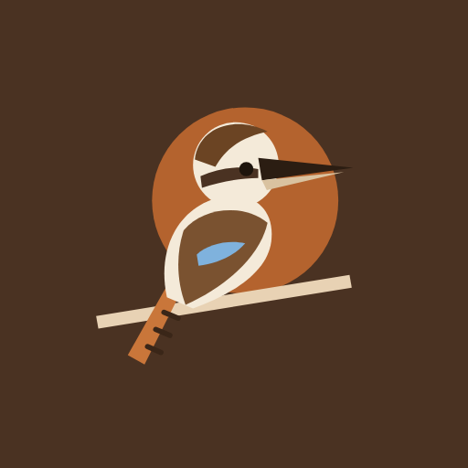

Warrimoo Wildlife
Your own record of the Australian wildlife you see and hear.
What it does
- Log a bird, mammal, reptile, frog, insect or spider as seen or heard in two taps, with the date, time, region and GPS position.
- 3,360 species across every state and territory, with photos, calls and field notes.
- Life, year, month and home patch lists, stats, and a satellite map of your records.
- Photo and call quizzes.
- Works without mobile signal. Photos, maps and calls download state by state, so the app stays small.
Help
- Getting started: pick your states on the first screen, follow the short tour, then choose what to download. Use wifi for the downloads if you can.
- Changing states or downloads: More, then States and downloads.
- Seeing the tour again: More, then Learn, then Welcome tour.
- Keeping your records safe: More, then Save a backup file. Keep the file somewhere off your phone.
- Questions or problems: apps@warrimoo.net
About
- Free, no ads, no account. Your records stay on your phone. Privacy policy
- Species lists come from research grade iNaturalist records. Photos are by iNaturalist contributors and calls are from xeno-canto.org, each under the licence credited in the app. Satellite imagery is Sentinel-2 cloudless by EOX.